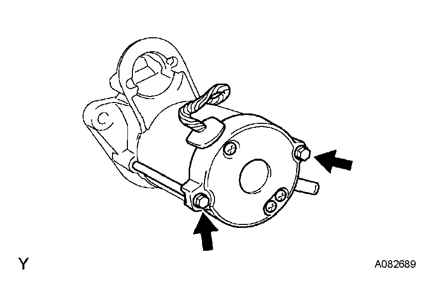
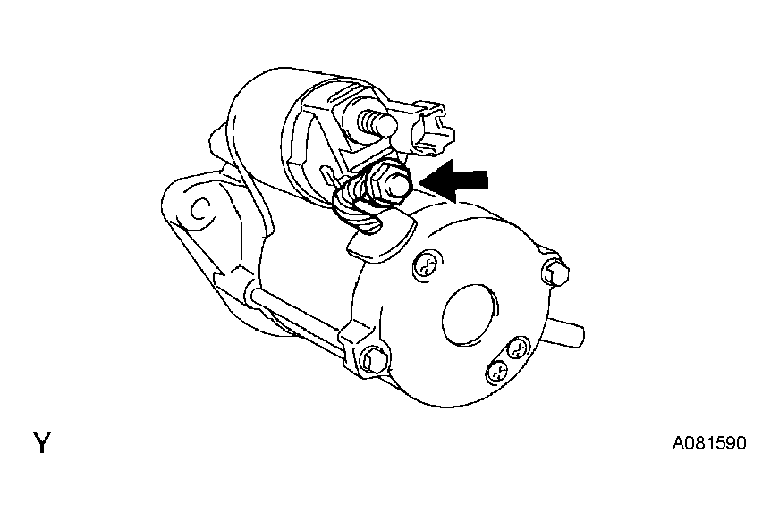

Starting (1NZ-FE): Starter: Reassembly
- INSTALL STARTER CENTER BEARING CLUTCH SUB-ASSEMBLY
- Install the drive lever set pin onto the starter center bearing clutch.
- Install the starter center bearing clutch with drive lever set pin to the starter drive housing.
- INSTALL PLANET GEAR
- Apply grease to the planet gears and planet shaft pins.
- Install the 3 planet gears.
- INSTALL STARTER ARMATURE PLATE
- Insert the starter armature plate into the starter yoke.
- Align the cutout of the plate with the inside protrusion of the starter yoke, and install the plate.
- INSTALL STARTER ARMATURE ASSEMBLY
- Apply grease to the washer plate and armature shaft.
- Install the armature shaft onto the starter commutator end frame.
- Using snap ring pliers, install the plate washer and snap ring.
- Using a vernier caliper, measure the snap ring length.
Maximum length: 5.0 mm (0.197 in)
If the length is greater than the maximum, replace the snap ring with a new one.
- INSTALL STARTER COMMUTATOR END FRAME COVER
- INSTALL STARTER YOKE ASSEMBLY
- Align the rubber of the starter commutator end frame with the cutout of the starter yoke.
- Install the starter yoke onto the starter commutator end frame.
- Align the key located on the starter yoke with the keyway of the starter housing.
- Install the starter yoke and commutator end frame with the 2 through bolts.

Courtesy of © TOYOTA, LICENSE AGREEMENT TMS1002Torque: 6.0 N*m (61 kgf*cm, 53 in.*lbf)
- INSTALL MAGNET STARTER SWITCH BODY
- Apply grease to the plunger and hook.
- Put the plunger hook of the magnet switch body on the drive lever.
- Install the plunger and return spring as shown in the illustration.
- Install the magnet switch body with the 2 screws.
Torque: 7.5 N*m (76 kgf*cm, 66 in.*lbf)
- Connect the lead wire to the terminal with the nut.

Courtesy of © TOYOTA, LICENSE AGREEMENT TMS1002Torque: 10 N*m (102 kgf*cm, 7.4 ft.*lbf)